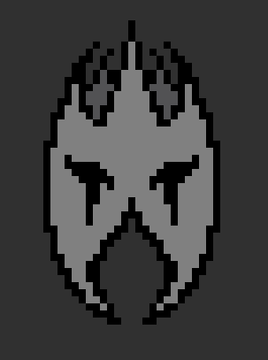

shadow spire ascension
Seeker 1
Zyrnitra
Tyrryal
Faelad
Illusion
Flamebearer
Shadowcaster
Eclipse
Mirage
Nobody
Phantom
Philosopher
Reaper
Shade
Shadow
Silhouette
Spectre
Spirit
Sorceror
Warrior
Watcher
Wraith
Yin
Yang
Seeker 2
Zyrnitra
Tyrryal
Faelad
Illusion
Flamebearer
Shadowcaster
Eclipse
Mirage
Nobody
Phantom
Philosopher
Reaper
Shade
Shadow
Silhouette
Spectre
Spirit
Sorceror
Warrior
Watcher
Wraith
Yin
Yang

Shadow Scholar's Riddle
Yes
No
wraithianic cartomancy
Draw Cards
Reset Deck
shade blade sorcery
scoundrel solitaire variation
speed trainer metronome
BPM:
100
Time Signature
3/4
4/4 (Default)
5/4
Tone
Tempo Change (BPM)
Bars per Tempo Change
Increase or Decrease Tempo?
Increase
Decrease
Start
Reset